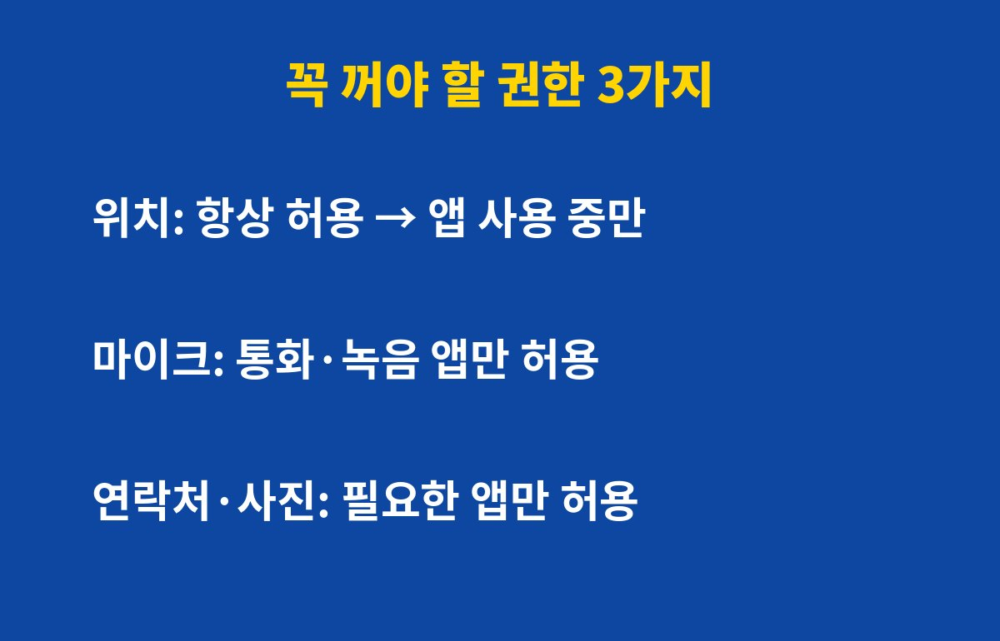
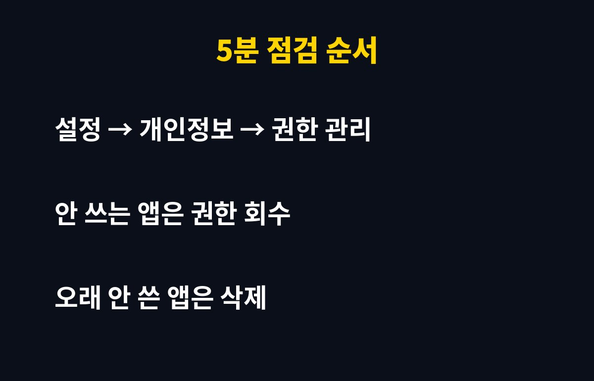

앱 권한 설정, 지금 폰에 켜져 있는 것 그대로 두고 계신가요? 스마트폰을 쓴다면 오늘 5분만 투자해서 꼭 확인해야 하는데, 어떤 권한이 제일 위험한지 바로 알려드릴게요.
앱을 처음 깔 때 아무 생각 없이 '모두 허용'을 눌러본 적 있으시죠? 그때 허용한 권한은 우리가 직접 끄기 전까지 계속 살아 있어요.
문제는 한 번도 안 쓰는 앱도 권한을 쥐고 있다는 거예요. 위치, 마이크, 연락처를 앱이 마음대로 읽을 수 있는 상태라면 개인정보가 새어 나갈 길을 열어둔 셈이에요.
모든 권한을 다 막을 필요는 없어요. 아래 세 가지만 먼저 정리해도 불안이 확 줄어요.

| 권한 | 위험한 이유 | 추천 설정 |
|---|---|---|
| 위치 | 이동 경로와 생활 패턴이 노출돼요 | 앱 사용 중에만 허용 |
| 마이크 | 주변 대화가 수집될 수 있어요 | 통화·녹음 앱만 허용 |
| 연락처·사진 | 지인 정보와 사진이 넘어갈 수 있어요 | 꼭 필요한 앱만 허용 |
특히 위치는 '항상 허용'으로 되어 있는 앱이 의외로 많아요. 지도나 배달 앱이 아니라면 '앱 사용 중에만 허용'으로 바꿔두는 게 안전해요.
설정 앱에서 개인정보 보호 메뉴로 들어간 뒤 권한 관리를 열어보세요. 기종마다 이름은 조금 달라도 위치, 마이크, 카메라별로 어떤 앱이 쓰고 있는지 한눈에 보여줘요.

여기서 이름도 낯선 앱이나 몇 달째 안 쓴 앱이 보이면 권한을 바로 회수하세요. 그래도 찜찜하면 아예 삭제하는 게 제일 깔끔해요.
필요 없는 권한을 끄면 개인정보가 새는 길을 줄일 수 있어요.
경고부터 확인하라는 말은, 설정 화면에서 많이 허용된 권한부터 보라는 뜻이에요. 방치하면 결국 털린다는 이야기가 괜히 나오는 게 아니거든요.
흔한 실수는 권한 요청 창이 뜨면 내용을 읽지 않고 바로 '허용'을 누르는 거예요.
손전등이나 계산기 같은 단순한 앱이 연락처, 위치, 마이크를 달라고 하면 그 자체로 의심해 볼 만해요.
또 앱을 지웠다고 끝이 아니라, 그 앱에 연결해 둔 계정 로그인도 함께 정리하는 게 좋아요.
갤럭시는 오래 안 쓴 앱의 권한을 자동으로 거두는 옵션이 있고, 아이폰도 앱별 권한을 한 화면에서 볼 수 있어요.
아이 폰이나 부모님 폰은 본인이 잘 안 보시니, 가족이 함께 점검해 드리면 좋아요.
이렇게 해 두면 개인정보가 새는 길을 꽤 막을 수 있어요.
앱 권한을 끄면 대부분은 그 기능을 쓸 때 다시 허용을 물어봐요.
그러니 손해 볼까 걱정하기보다 꺼 두고 필요할 때 켜는 쪽이 안전해요.
새 앱을 깔 때마다 권한 요청 창을 한 번 더 읽어 보는 습관도 중요해요.
한 달에 한 번 이 순서로 점검하면 관리가 어렵지 않아요.
처음 정리할 때는 앱이 많아서 오래 걸릴 것 같지만, 실제로 해 보면 금방 끝나요.
정리한 날짜를 달력에 적어 두면 다음 점검을 잊지 않아요.
새 앱을 깔 때마다 그 앱이 왜 이 권한이 필요한지 한 번만 생각해 보세요.
이유가 떠오르지 않으면 일단 거절하고 필요할 때 허용하면 돼요.
카메라 앱은 카메라, 지도 앱은 위치처럼 이름과 맞는 권한만 남기면 기준이 단순해져요.
이렇게 기준을 하나 정해 두면 고민할 일이 줄어요.
가족 폰도 같은 기준으로 한 번 정리해 드리세요.
작은 습관이지만 개인정보를 지키는 데는 가장 확실한 방법이에요.
오늘 저녁에 딱 5분만 시간을 내 보세요.
생각보다 금방 끝나서 놀라실 거예요.
앞으로는 새 앱을 깔 때 권한 요청 창이 뜨면 '이 기능에 정말 필요한가?'를 한 번만 생각해보세요. 손전등 앱이 연락처를 달라고 한다면 이상한 거예요.
또 분기에 한 번쯤 권한 관리 화면을 열어보는 습관을 들이면 좋아요. 한 번 정리해두면 다음부터는 훨씬 빨리 끝나요.
오늘 정리한 내용이 도움이 되셨다면 구독해두세요. 폰 보안과 생활 꿀팁을 계속 알려드릴게요.
기사·공식 발표 기준이며 출시·가격 정보는 바뀔 수 있어요.